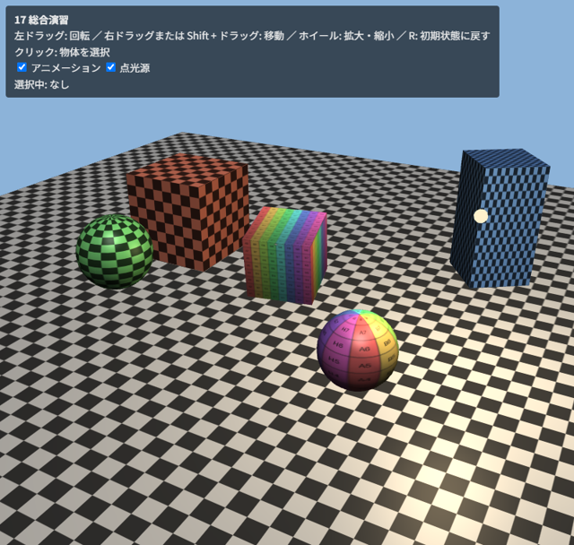

13. 総合演習
この章では、これまでの章で学んだ要素を組み合わせて、マウスで見回せる小さな 3D シーンを作ります。
13.1. 完成形
サンプル 17_scene.html は、次の要素を組み合わせたシーンです。
市松模様のテクスチャを敷き詰めた床（第 9 章）
平行光源と周回する点光源によるピクセル単位の Blinn-Phong ライティング（第 10 章）
マウスによるカメラ操作と、ウィンドウの大きさへの追従（第 11 章）

図 13.1 17_scene.html の実行結果
このサンプルはテクスチャ画像を使うため、ダウンロードして動かす場合は assets フォルダーも必要です。サンプルコード一覧から zip ファイルで一括ダウンロードすると便利です。
操作方法は 12_camera_control.html と同じです。加えて、物体をクリックすると、その物体が黄色く強調され、左上に名前が表示されます。
13.2. 全体の構成
プログラムは次の部分からなります。
部分 |
内容 |
|---|---|
シェーダー |
通常の描画用（ |
頂点データ |
|
補助関数 |
これまでの章のサンプルと共通の関数（シェーダーの作成、VAO の作成、画像の読み込み、テクスチャの作成、行列の計算、カメラ操作） |
物体の一覧 |
各物体の名前、形状、テクスチャ、色、モデル行列を返す関数を、配列 |
描画ループ |
canvas のリサイズ、行列の計算、全物体の描画を毎フレーム行います |
ピッキング |
クリックされたときだけ、ID の色でフレームバッファーに描画し、クリック位置のピクセルを読み取ります |
13.3. シーンの記述
シーンに置く物体は、データとして配列にまとめています。物体を追加・変更するときは、この配列を編集するだけで済みます。モデル行列は時刻を引数とする関数で表し、アニメーションする物体は時刻に応じた行列を返します。
623 // シーンに置く物体。model(t) は時刻 t（秒）におけるモデル行列を返す
624 const objects = [
625 { name: "床", mesh: "floor", texture: "checker", tint: [0.8, 0.8, 0.8], uvScale: 8,
626 model: () => mat4.identity() },
627 { name: "回転する立方体", mesh: "cube", texture: "uvgrid", tint: [1, 1, 1], uvScale: 1,
628 model: (t) => mat4.multiply(mat4.translation(0, 0.8, 0),
629 mat4.multiply(mat4.rotationY(t * 0.6), mat4.rotationX(t * 0.4))) },
630 { name: "左の立方体", mesh: "cube", texture: "checker", tint: [0.9, 0.5, 0.4], uvScale: 1,
631 model: () => mat4.multiply(mat4.translation(-2.5, 0.75, -1), mat4.scaling(1.5, 1.5, 1.5)) },
632 { name: "右奥の立方体", mesh: "cube", texture: "checker", tint: [0.4, 0.6, 0.9], uvScale: 2,
633 model: () => mat4.multiply(mat4.translation(2.5, 1, -2.5),
634 mat4.multiply(mat4.rotationY(0.6), mat4.scaling(1, 2, 1))) },
635 { name: "手前の球", mesh: "sphere", texture: "uvgrid", tint: [1, 1, 1], uvScale: 1,
636 model: (t) => mat4.multiply(mat4.translation(1.8, 0.5, 1.5), mat4.rotationY(t * 0.5)) },
637 { name: "弾む球", mesh: "sphere", texture: "checker", tint: [0.5, 0.9, 0.5], uvScale: 2,
638 model: (t) => mat4.translation(-1.5, 0.5 + Math.abs(Math.sin(t * 2)) * 1.2, 2) },
639 ];
13.4. シェーダー
通常の描画用のフラグメントシェーダーでは、テクスチャから読んだ色に物体ごとの色 u_tint を掛けたものを物体の色とし、第 10 章と同じ方法でライティングを行います。選択中の物体は、最終的な色を黄色に近づけて強調します。
57const SCENE_FS = `#version 300 es
58precision highp float;
59
60uniform sampler2D u_texture;
61uniform vec3 u_tint; // テクスチャに掛ける色
62uniform vec3 u_cameraPosition;
63uniform vec3 u_lightDirection; // 平行光源: 表面から光源へ向かう方向
64uniform vec3 u_pointPosition;
65uniform vec3 u_pointColor; // 点光源を消すときは 0
66uniform bool u_emissive; // 光源の表示用: ライティングをしない
67uniform bool u_highlight; // 選択中の物体を明るくする
68
69in vec3 v_worldPosition;
70in vec3 v_worldNormal;
71in vec2 v_uv;
72out vec4 outColor;
73
74vec3 shade(vec3 N, vec3 V, vec3 L, vec3 lightColor, vec3 baseColor) {
75 float diffuse = max(dot(N, L), 0.0);
76 vec3 H = normalize(L + V);
77 float specular = diffuse > 0.0 ? pow(max(dot(N, H), 0.0), 48.0) * 0.4 : 0.0;
78 return lightColor * (diffuse * baseColor + specular);
79}
80
81void main() {
82 vec3 baseColor = texture(u_texture, v_uv).rgb * u_tint;
83 vec3 color;
84 if (u_emissive) {
85 color = u_tint;
86 } else {
87 vec3 N = normalize(v_worldNormal);
88 vec3 V = normalize(u_cameraPosition - v_worldPosition);
89 color = 0.15 * baseColor; // 環境光
90 color += shade(N, V, u_lightDirection, vec3(0.7), baseColor);
91 vec3 toLight = u_pointPosition - v_worldPosition;
92 float distance = length(toLight);
93 float attenuation = 1.0 / (1.0 + 0.1 * distance + 0.04 * distance * distance);
94 color += shade(N, V, toLight / distance, u_pointColor, baseColor) * attenuation;
95 }
96 if (u_highlight) {
97 color = mix(color, vec3(1.0, 0.9, 0.2), 0.35);
98 }
99 outColor = vec4(color, 1.0);
100}
101`;
13.5. 描画ループ
描画ループでは、毎フレーム次の処理を行います。
canvas の描画バッファーの大きさを表示サイズに合わせます。大きさが変わった場合は、ピッキング用のフレームバッファーも作り直します。
カメラの状態からビュー行列を、描画バッファーの縦横比から投影行列を作ります。
各物体のモデル行列を計算します（ピッキングでも同じ行列を使うため、変数に保存しておきます）。
すべての物体に共通の uniform 変数（行列、視点、光源）を設定します。
物体ごとにモデル行列、法線行列、テクスチャなどを設定して描画します。
698 function render(time) {
699 const deltaTime = previousTime === null ? 0 : (time - previousTime) / 1000;
700 previousTime = time;
701 if (document.getElementById("animate").checked) {
702 sceneTime += deltaTime;
703 }
704
705 // canvas の大きさが変わったら、ピッキング用のフレームバッファーも作り直す
706 if (resizeCanvasToDisplaySize(canvas) || !pickingTarget) {
707 if (pickingTarget) {
708 pickingTarget.dispose();
709 }
710 pickingTarget = createPickingTarget(gl, canvas.width, canvas.height);
711 }
712
713 const eye = cameraEye(camera);
714 const projection = mat4.perspective(Math.PI / 4, canvas.width / canvas.height, 0.1, 100);
715 viewProjection = mat4.multiply(projection, mat4.lookAt(eye, camera.target, [0, 1, 0]));
716 modelMatrices = objects.map((object) => object.model(sceneTime));
717 const pointOn = document.getElementById("pointLight").checked;
718 const pointPosition = [Math.cos(sceneTime * 0.7) * 3, 2.2, Math.sin(sceneTime * 0.7) * 3];
719
720 gl.viewport(0, 0, canvas.width, canvas.height);
721 gl.clearColor(0.55, 0.7, 0.85, 1.0);
722 gl.clear(gl.COLOR_BUFFER_BIT | gl.DEPTH_BUFFER_BIT);
723 gl.useProgram(sceneProgram);
724 gl.uniformMatrix4fv(sceneUniforms.u_viewProjection, false, viewProjection);
725 gl.uniform3fv(sceneUniforms.u_cameraPosition, eye);
726 gl.uniform3fv(sceneUniforms.u_lightDirection, lightDirection);
727 gl.uniform3fv(sceneUniforms.u_pointPosition, pointPosition);
728 gl.uniform3fv(sceneUniforms.u_pointColor, pointOn ? [1.0, 0.85, 0.6] : [0, 0, 0]);
729 gl.uniform1i(sceneUniforms.u_texture, 0);
730 gl.activeTexture(gl.TEXTURE0);
731
732 function draw(mesh, model, texture, tint, uvScale, emissive, highlight) {
733 gl.uniformMatrix4fv(sceneUniforms.u_model, false, model);
734 gl.uniformMatrix3fv(sceneUniforms.u_normalMatrix, false, mat4.normalMatrix(model));
735 gl.uniform1f(sceneUniforms.u_uvScale, uvScale);
736 gl.uniform3fv(sceneUniforms.u_tint, tint);
737 gl.uniform1i(sceneUniforms.u_emissive, emissive ? 1 : 0);
738 gl.uniform1i(sceneUniforms.u_highlight, highlight ? 1 : 0);
739 gl.bindTexture(gl.TEXTURE_2D, texture);
740 gl.bindVertexArray(mesh.vao);
741 gl.drawElements(gl.TRIANGLES, mesh.indexCount, gl.UNSIGNED_SHORT, 0);
742 }
743
744 objects.forEach((object, i) => {
745 draw(meshes[object.mesh], modelMatrices[i], textures[object.texture],
746 object.tint, object.uvScale, false, selectedId === i + 1);
747 });
748 if (pointOn) {
749 draw(meshes.lamp, mat4.translation(...pointPosition), textures.checker,
750 [1.0, 0.95, 0.8], 1, true, false);
751 }
752 gl.bindVertexArray(null);
753
754 requestAnimationFrame(render);
755 }
756 requestAnimationFrame(render);
757}
13.6. ピッキングの実装
ピッキング用のフレームバッファーは、色と深度の両方をレンダーバッファーで作ります（読み取りは gl.readPixels で行い、シェーダーからは読まないため）。canvas と同じ大きさにすることで、クリック位置のピクセルの座標をそのまま使えます。
クリックされたら、ピッキング用のフレームバッファーに、各物体を ID の色で塗りつぶして描画し、クリック位置の 1 ピクセルを読み取ります。
653 // ---- クリックで物体を選択する ----
654 let pointerDownAt = null;
655 canvas.addEventListener("pointerdown", (event) => {
656 pointerDownAt = [event.clientX, event.clientY];
657 });
658 canvas.addEventListener("pointerup", (event) => {
659 if (!pointerDownAt || event.button !== 0) {
660 return;
661 }
662 // ほとんど動かさずに離した場合だけクリックとみなす（ドラッグによる回転と区別する）
663 const moved = Math.hypot(event.clientX - pointerDownAt[0], event.clientY - pointerDownAt[1]);
664 pointerDownAt = null;
665 if (moved < 5) {
666 const rect = canvas.getBoundingClientRect();
667 // CSS ピクセルを描画バッファーのピクセルに変換する。y 軸の向きが逆なので反転する
668 const x = Math.floor((event.clientX - rect.left) * canvas.width / rect.width);
669 const y = Math.floor(canvas.height - (event.clientY - rect.top) * canvas.height / rect.height - 1);
670 selectedId = pick(x, y);
671 document.getElementById("selected").textContent =
672 selectedId > 0 ? objects[selectedId - 1].name : "なし";
673 }
674 });
675
676 // ピッキング用のフレームバッファーに ID の色で描画し、(x, y) のピクセルを読み取る
677 function pick(x, y) {
678 gl.bindFramebuffer(gl.FRAMEBUFFER, pickingTarget.framebuffer);
679 gl.viewport(0, 0, pickingTarget.width, pickingTarget.height);
680 gl.clearColor(0, 0, 0, 0);
681 gl.clear(gl.COLOR_BUFFER_BIT | gl.DEPTH_BUFFER_BIT);
682 gl.useProgram(pickProgram);
683 gl.uniformMatrix4fv(pickUniforms.u_viewProjection, false, viewProjection);
684 objects.forEach((object, i) => {
685 gl.uniformMatrix4fv(pickUniforms.u_model, false, modelMatrices[i]);
686 gl.uniform4fv(pickUniforms.u_idColor, idToColor(i + 1));
687 const mesh = meshes[object.mesh];
688 gl.bindVertexArray(mesh.vao);
689 gl.drawElements(gl.TRIANGLES, mesh.indexCount, gl.UNSIGNED_SHORT, 0);
690 });
691 gl.bindVertexArray(null);
692 const pixel = new Uint8Array(4);
693 gl.readPixels(x, y, 1, 1, gl.RGBA, gl.UNSIGNED_BYTE, pixel);
694 gl.bindFramebuffer(gl.FRAMEBUFFER, null);
695 return colorToId(pixel);
696 }
実装上の注意点は次のとおりです。
マウスのイベントの座標（CSS ピクセル、左上が原点）を、描画バッファーのピクセル座標（左下が原点）に変換します。
devicePixelRatioによる倍率と、y 軸の向きの違いに注意します。ドラッグによるカメラ操作の終わりをクリックと誤認しないように、ボタンを押してから離すまでの移動量が小さい場合だけクリックとみなします。
ID の色が正確に読み取れるように、ピッキング用の描画ではライティングやブレンドを行いません。また、アンチエイリアスがかかると物体の境界で色が混ざるため、マルチサンプルでないフレームバッファーを使います。
gl.readPixelsは GPU の処理の完了を待つため、毎フレーム呼ぶと性能が低下します。このサンプルのように、必要なときだけ呼びます。
13.7. 発展課題
このサンプルをもとに、次のような改良に挑戦してみてください。